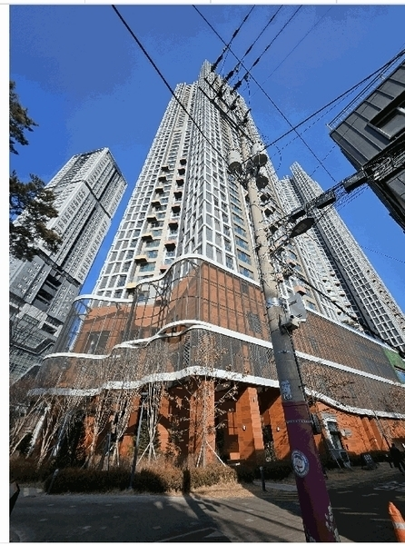
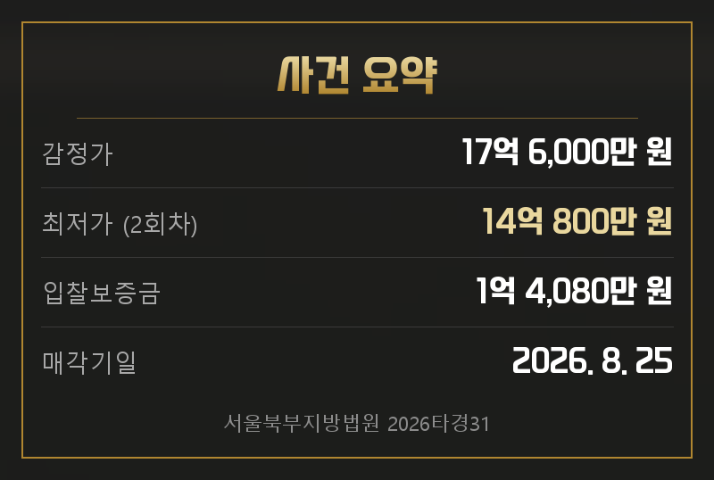
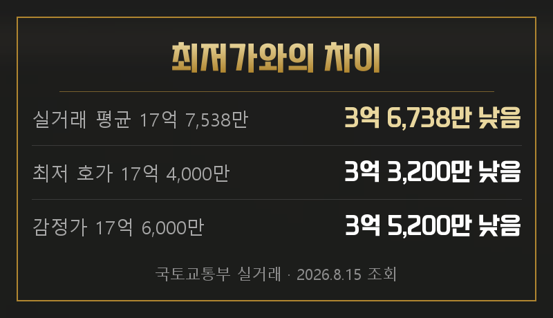
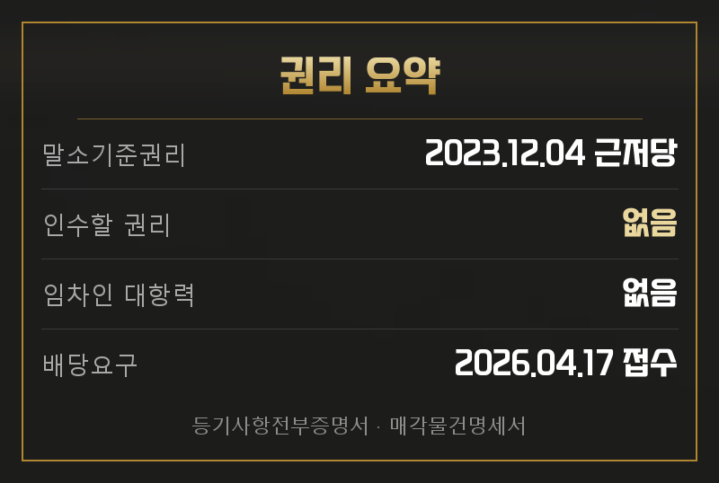
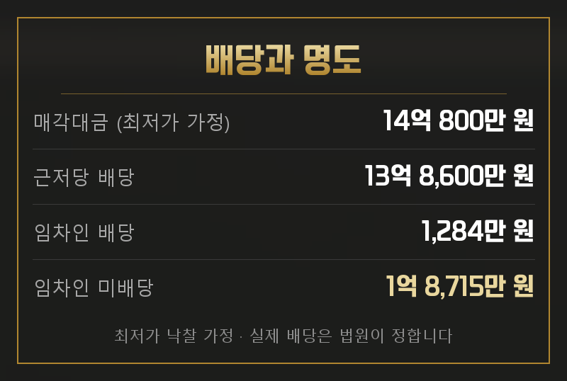
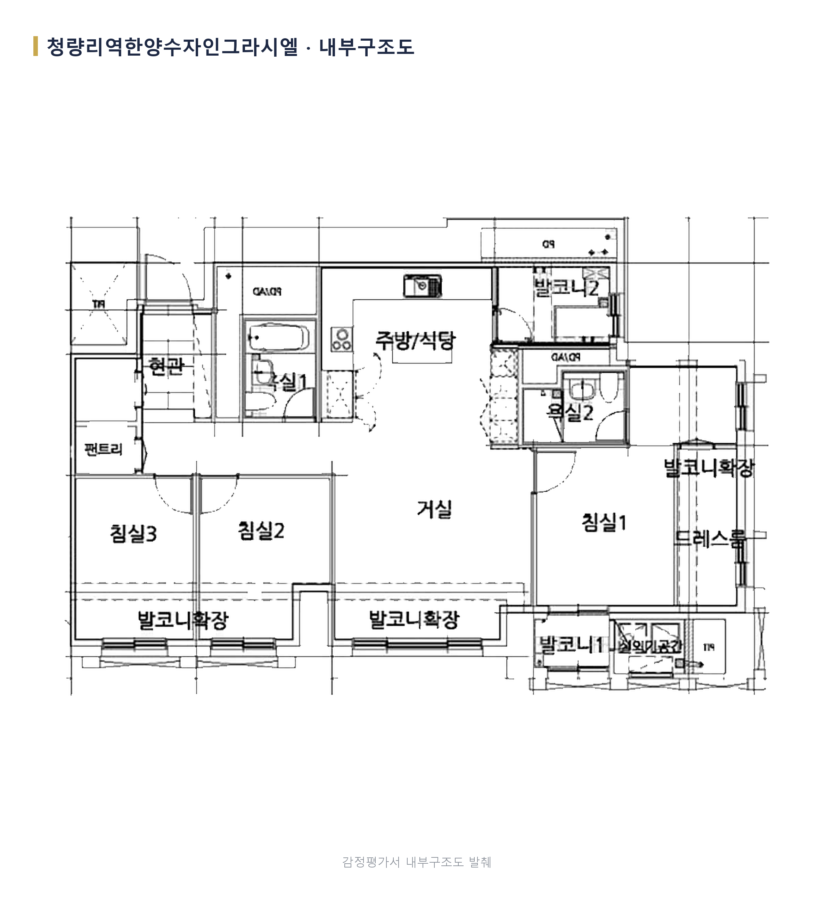
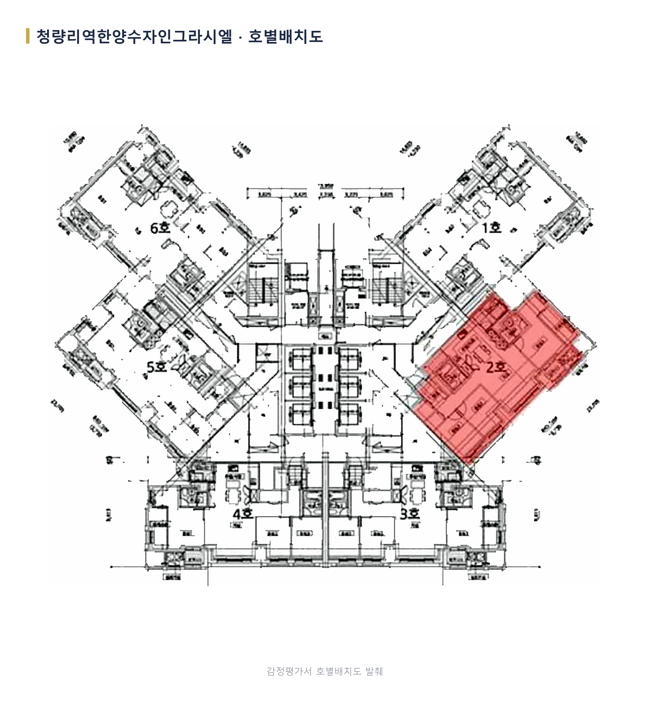
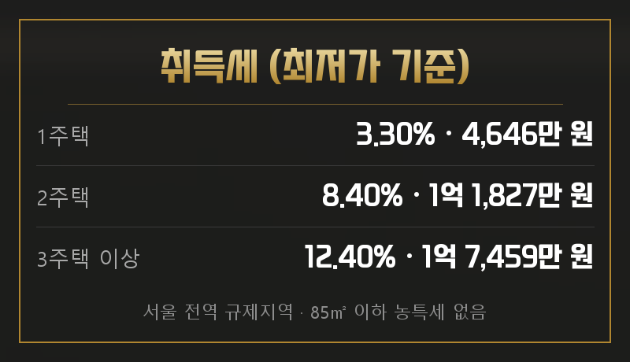
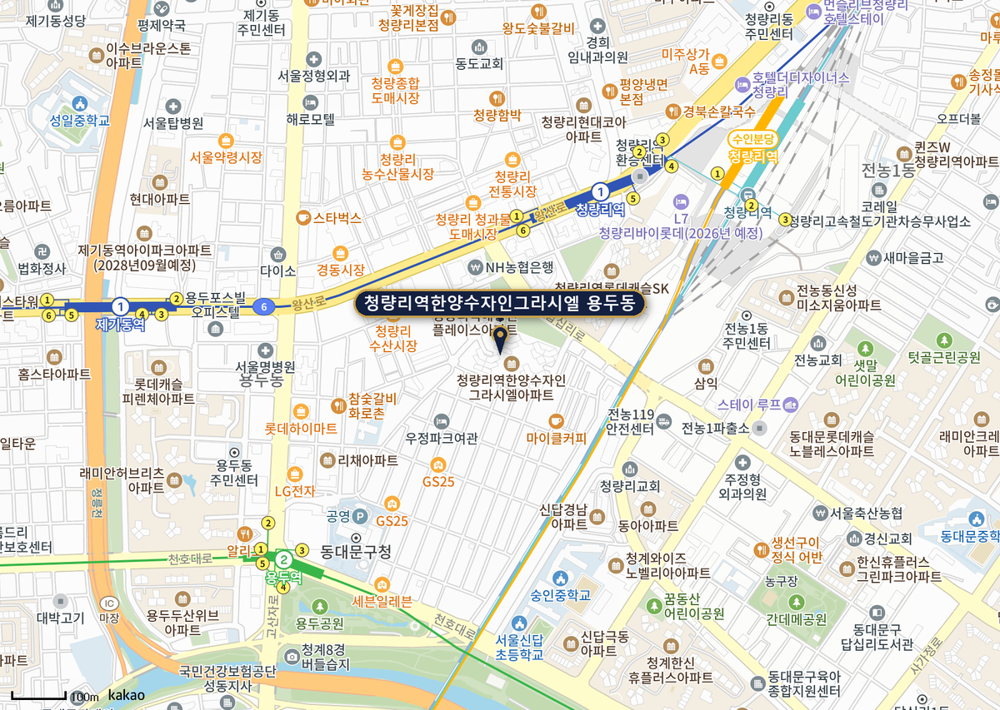
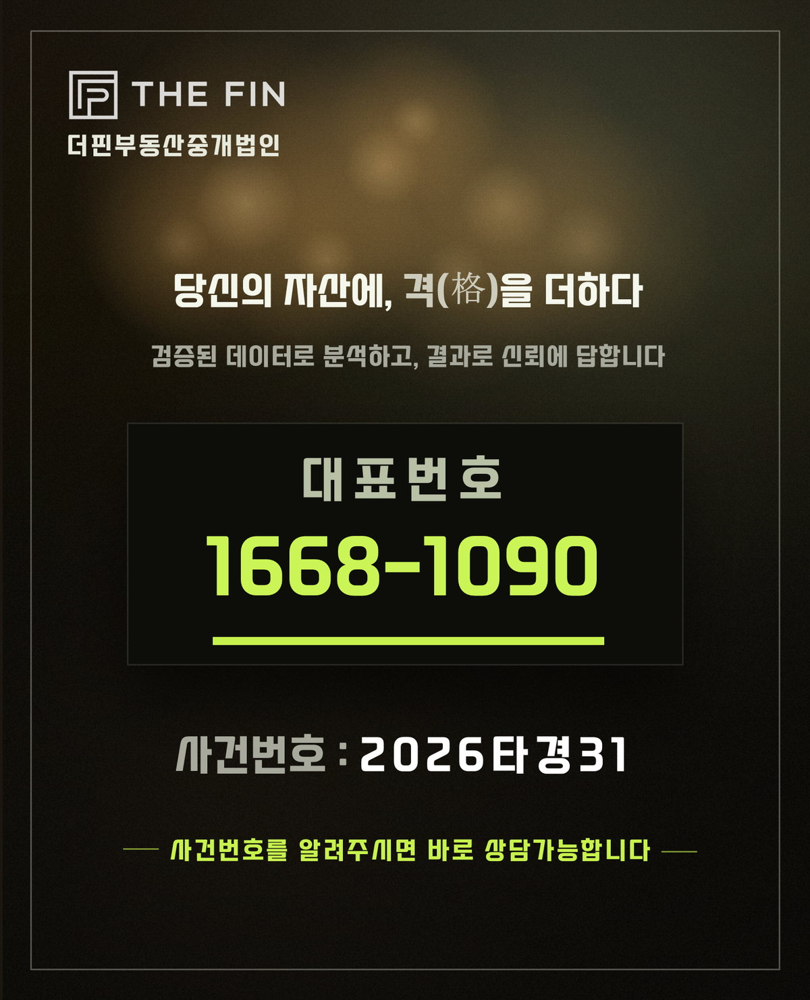

서울북부지방법원 2026타경31
청량리역한양수자인그라시엘 102동 2102호
전용 84.97㎡ · 공급 36평형
2회차 최저가 14억 800만 원

청량리역 남서측 용두동, 청량리역한양수자인그라시엘 102동 2102호가 경매로 나왔습니다. 2023년 6월 사용승인 난 신축입니다.
1차는 감정가 그대로 17억 6,000만 원에 나왔다가 7월 21일 유찰됐습니다. 지금 보시는 14억 800만 원이 2회차 최저가입니다. 취득가가 9억 원을 넘는 구간이라 세금까지 감안하면 실제 들어가는 돈이 달라집니다.

| 관할 | 서울북부지방법원 경매7계 |
|---|---|
| 소재지 | 서울 동대문구 용두동 798 청량리역한양수자인그라시엘 102동 2102호 |
| 면적 | 전용 84.97㎡ (25.7평) · 공급 36평형 · 대지권 11.86㎡ |
| 사용승인 | 2023년 6월 2일 · 철근콘크리트 |
| 청구금액 | 1,222,200,000원 |
| 감정 기준시점 | 2026년 2월 15일 |
같은 평형 매매 실거래는 최근 3개월 8건, 16억 4,000만 원에서 19억 원 사이이고 평균은 17억 7,538만 원입니다. 가장 최근은 7월 20일 18억 3,000만 원(45층)입니다. 같은 단지라도 층과 계약 시점에 따라 갈리니, 조건이 비슷한 거래만 추려 보시면 시세를 가늠하기 수월합니다.
최저가 14억 800만 원과 비교하면 이만큼 차이가 납니다.

차이 금액이 그대로 수익은 아닙니다.
최저가는 입찰을 시작하는 금액이지 낙찰되는 금액이 아닙니다. 취득세와 명도비, 체납관리비에 경쟁 상황까지 고려해서 예상 낙찰가를 산정하셔야 합니다.
같은 평형 전세 실거래는 최근 1년 20건으로 7억 8,700만 원에서 10억 원 사이, 중앙값 8억 9,500만 원입니다. 가장 최근은 8월 11일 10억 원(49층)이고, 최근 매매 18억 3,000만 원으로 나누면 전세가율은 약 55%입니다.
월세는 8월 11일 보증금 1억 원에 월 385만 원, 7월 14일 보증금 6억 3,000만 원에 월 75만 원입니다. 보증금 비중에 따라 월 차임이 크게 달라집니다.
등기부에서 가장 앞선 담보는 2023년 12월 4일 설정된 채권최고액 13억 8,600만 원의 근저당(농협은행)입니다. 이 근저당이 말소기준권리입니다.

가압류와 압류는 말소기준권리보다 뒤라 소멸합니다. 등기부상 낙찰자가 인수할 권리는 없습니다.
점유자는 임차인 한 세대입니다. 보증금 2억 원에 월 차임 240만 원인 반전세이고 전입일과 확정일자가 모두 2024년 2월 16일이라, 말소기준권리보다 늦어 대항력이 없습니다. 배당요구도 종기(2026년 4월 22일) 안인 4월 17일에 접수됐습니다. 낙찰자가 보증금을 물어줄 일은 없습니다.
최저가에 낙찰된다고 가정하고 배당을 돌려봅니다.

임차인이 보증금 2억 원 중 약 1억 8,715만 원을 돌려받지 못하는 구조입니다.
낙찰자가 물어줄 의무는 없습니다. 다만 못 받은 금액이 클수록 이사 협의는 길어집니다. 명도 비용과 기간을 넉넉히 잡으셔야 합니다.
집행관이 두 차례 방문했지만 폐문부재였고, 안내문을 붙였으나 연락이 없어 점유관계를 확인하지 못한 상태입니다.

거실을 가운데 두고 침실 3개, 욕실 2개입니다. 침실 2·3과 거실 쪽 발코니가 확장돼 있으며 팬트리와 드레스룸이 있습니다.

2023년 6월 준공한 4개동 1,152세대 단지입니다. 주차는 총 1,381대로 세대당 약 1.2대, 난방은 개별난방(도시가스)입니다. 시공은 한양건설, 시행은 보성산업개발입니다.
실제로 드는 돈은 낙찰가에 취득세·명도비·체납관리비를 더한 금액입니다. 서울은 전 지역이 규제지역이라 보유 주택 수에 따라 취득세가 크게 갈립니다.

전용 85㎡ 이하라 농어촌특별세는 없고, 위 세율은 취득세와 지방교육세 합계입니다.
대출도 미리 확인하셔야 합니다.
규제지역 주택담보대출은 LTV 40%에 한도가 걸리고(15억 원 이하 최대 6억 원) 스트레스 DSR도 적용됩니다. 잔금 일정에 맞춰 입찰 전에 확인해 두셔야 안전합니다.
청량리역에서 남서쪽으로 가까운 자리이고, 주변은 아파트와 다세대, 학교, 근린생활시설이 섞여 있습니다. 행정동인 용신동은 사업체 약 6,685개, 종사자 약 28,825명으로 직장과 주거가 함께 있는 지역입니다(통계청 SGIS, 2024년).

청량리역이 1호선·경의중앙선·수인분당선을 함께 쓰고, 용두역·제기동역도 걸어서 닿습니다. 동대문구청과 경동시장 생활권입니다.
입찰보증금 1억 4,080만 원은 수표로 준비하시는 편이 편합니다. 본인이 가시면 신분증과 도장, 대리인이 가시면 인감증명서·위임장·대리인 신분증·도장이 필요합니다.
입찰 시각은 법원 공고를 확인하셔야 합니다. 매각물건명세서에는 날짜만 있고 시각이 없습니다.
임차인 보증금이나 남은 빚을 낙찰자가 떠안지 않는 사건이라, 결국 얼마를 적어 내느냐가 수익을 가릅니다. 다만 임차인이 못 받는 금액이 커서 명도 시간과 비용은 보수적으로 잡으셔야 합니다.
여기까지가 공개 자료로 볼 수 있는 범위입니다. 적정 입찰가는 경쟁 상황과 보유 주택 수, 대출 한도까지 감안해 사건마다 다르게 산출하셔야 합니다.
THE FIN은 2014년부터 경매 현장에 있었고, 법원 매수신청대리인으로 등록된 중개법인입니다. 권리분석·시세조사·입찰 동행·잔금 대출·명도를 단계마다 담당이 나뉜 팀이 함께 진행하고, 사건별 진행 상황을 한 곳에서 관리하고 있습니다.
이 물건으로 입찰을 생각하고 계시면 매각기일 전에 한 번 연락 주십시오. 보유 주택 수와 대출 한도까지 고려해 이 사건에 맞는 적정 입찰가를 함께 산출해 드립니다.

이이사님이 주신 초안과 이 원고가 어디서 갈렸는지 적어 둡니다. 무엇을 고쳤는지 보시고 피드백 주시면 다음 회차에 반영합니다.